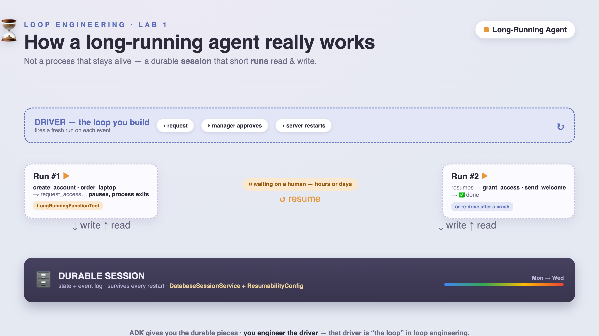

It's Monday, 9:00 a.m. Alice is starting her first day. Somewhere, an agent is supposed to create her accounts, order her laptop, get her manager to approve production access, and send her a welcome note.
Simple, right? You wire up an agent, it calls five tools, done. It even works in your demo.
Then reality happens. The onboarding takes two days, not two seconds — it waits on a manager who's in meetings until Wednesday. Halfway through, the server it's running on gets redeployed and the process dies. When someone restarts it... Alice now has two MacBooks on the way, and her access request has vanished into the void.
That gap — between the agent that works in a demo and the agent that survives the real world — is what this codelab is about.
You'll build an onboarding agent with Google's Agent Development Kit (ADK) and, step by step, turn it into a proper long-running agent. By the end it will:
DatabaseSessionService).LongRunningFunctionTool).ResumabilityConfig).Anyone who's built a basic ADK (or any) agent and now wants to run one for real. You should be comfortable in a terminal and know a little Python. No cloud account required for the core lab.
Each step lives in its own folder (01_baseline → 07_driver) and adds exactly one idea, so you can always diff two neighbours to see precisely what changed.
📦 All the code is on GitHub: github.com/cuppibla/loop-lab-onboarding — you'll clone it in Setup, and every step links to its folder.
Before we touch code, let's fix the mental model — because almost everyone gets it wrong at first, and once you get it right, the rest of the lab is easy.

Most people imagine a long-running agent as a process that stays running for hours or days, sitting in memory, "thinking," waiting. Like this:
[ one Python process, alive for 2 days ] ← wrong
create_account ...... waiting ...... waiting ...... approval! ...... grant_access ...... done
That's a disaster. A process that lives for two days will be redeployed, OOM-killed, or crash. The moment it dies, everything in memory is gone.
A long-running agent is not a process that stays alive. It's this:
A long-running agent = a durable
session
that many short-lived
runs
read and write, plus a
driver
that starts a new run whenever there's something to do.
(durable session lives in a database, for days)
run #1 ─────────────► pauses / ends, process EXITS 🡒 nothing in memory
...(hours pass; a manager approves)...
run #2 ─────────────► resumes from the DB, finishes
The agent itself is almost stateless. All the state lives in the session (in a database). The continuity comes from a small piece of code — the driver — that fires a fresh run whenever an event says "there's work to do": a request comes in, a manager approves, a timer fires, or the server restarts.
Analogy: think of a save-game. You don't leave the console on for a week to keep your progress. The game saves to disk; you can quit, come back tomorrow, load, and continue exactly where you were. Our agent works the same way — the session is the save file, and the driver is you pressing "Continue."
Everything in this lab is one of these four pieces:
# | Piece | What it does | Who gives it to you |
1 | Durable session | state lives in a DB, not memory | ADK |
2 | Resumable runs | replay finished steps, re-run the unfinished one | ADK |
3 | Pause / resume | end the run, continue later on an external event | ADK |
4 | The driver + idempotency | the loop that re-drives runs, safely | you (Steps 3–5, 7) — this is the "engineering" |
ADK hands you 1–3. Piece 4 is the part you build — and it's why this discipline is called loop engineering: the loop is the driver.
Keep this table in mind. Each step from here just fills in one row.
Let's ground this in the actual story from the top of the page, so the four pieces stop being abstract:
Moment in Alice's onboarding | Piece involved | What's actually happening |
Monday 9am: agent creates her account, orders her laptop | Durable session | Each result is written to the DB as it happens — not held in RAM "for later" |
Manager is in meetings until Wednesday | Pause / resume | The run ends the moment |
Wednesday: manager clicks approve | Pause / resume | A brand-new process starts a brand-new run, on the same session, and continues from |
Server gets redeployed mid-run | Resumable runs | The next run replays everything already logged, then re-runs only the one step that never finished |
The re-run step happens to be "order the laptop" again | Driver + idempotency | This is the trap. Without a guard, Alice gets two laptops. This is piece 4, and it's the one nothing hands you for free |
async/await?"If you've written async code before, the pause/resume behavior might look like awaiting a slow call. It's a tempting but wrong mental model — and worth killing now, because it'll bite you every step from here on.
| This lab's pause/resume | |
Where does execution live while waiting? | On the stack, inside the running process | Nowhere — the process has exited |
What survives if the machine reboots? | Nothing. The | Everything. It's a row in a database |
What resumes it? | The same coroutine, when the awaited call returns | Any process, possibly on a different machine, sending a message |
How long can it wait? | Seconds, maybe minutes — bounded by the process's lifetime | Minutes, days, weeks — bounded by nothing |
👉💻 Clone the repo (you'll cd into a different folder for each step):
git clone https://github.com/cuppibla/loop-lab-onboarding.git
cd loop-lab-onboarding
👉💻 Create the environment. The script picks a Python 3.10+ interpreter, makes a .venv, and installs the pinned dependencies:
./setup_venv.sh # Windows: setup_venv.bat
source .venv/bin/activate
🧰 Prefer uv? Run uv sync instead, and use uv run python ... wherever the codelab says python .... Everything else is identical.
The agent calls Gemini, so it needs a key. This is free from Google AI Studio and takes about a minute — no billing and no cloud project required for the core lab.
👉 Get the key:
AIza... and is about 40 characters long.👉 Add the key to your
.env
. Open the .env file at the repo root and set these two lines (replace AIza...your-key... with the key you just copied):
GOOGLE_API_KEY=AIza...your-key...
GOOGLE_GENAI_USE_VERTEXAI=False
That's it — no cloud project needed until the very last step.
ℹ️ About the "systems": to keep the focus on durability (not integrations), every external system — the account service, the laptop store, the access system — is a local stub in fake_systems.py that just writes a row to a JSON file. That's what lets us count side effects and prove the two-laptops bug later.
📂 Code for this step: 01_baseline/
Let's meet the agent. It's an ordinary ADK agent with five tools that run in order.
👉💻 Run the baseline onboarding:
cd 01_baseline
python driver.py Alice
Expected output:
-> create_account({'employee': 'Alice'})
-> order_laptop({'employee': 'Alice'})
-> request_access({'employee': 'Alice', 'system': 'prod'})
-> grant_access({'employee': 'Alice', 'system': 'prod'})
-> send_welcome({'employee': 'Alice'})
<agent> ONBOARDING COMPLETE
ℹ️ About the one-line
[EXPERIMENTAL]
warnings: ADK 2.5 prints a couple of harmless feature-flag notices when it starts (and from Step 4 on, one for ResumabilityConfig). They're expected — ignore them. We've trimmed them from every expected output in this lab.
What just happened: the Gemini model read its instructions and called the five tools in order. Here's the whole agent (01_baseline/agent.py), trimmed:
def order_laptop(employee: str) -> dict:
return {"status": "ok", "order_id": fake_systems.order_laptop(employee)}
# ... create_account, request_access, grant_access, send_welcome ...
root_agent = Agent(
name="onboarding",
model="gemini-3-flash-preview",
instruction="... do these five steps in order, one tool call at a time ...",
tools=[create_account, order_laptop, request_access, grant_access, send_welcome],
)
The driver.py here is as simple as it gets: it uses an InMemorySessionService, sends one message, and streams the events.
This is the agent 90% of tutorials stop at. It's fine — until something goes wrong.
👉 Try to break it: run it again, and while it's printing, press Ctrl-C.
There is no onboarding.db. There is no saved progress. Everything was in RAM, and it's gone. If this were Alice's real onboarding, you'd have no idea which steps finished and which didn't. Did the laptop get ordered? Nobody knows.
A real onboarding spans days and will be interrupted. So the very first thing we need is durability — piece #1. cd ..
📂 Code for this step: 02_persistence/
The fix for "it's all in RAM" is to move the state out of RAM and into a database. In ADK, that's the job of a SessionService.
👉💻 Run it, then read the result from a
separate
process:
cd 02_persistence
python driver.py reset
python driver.py start Alice
python driver.py status Alice # a brand-new process, reading from disk
Expected output (note: the status line is printed by a fresh process that ran afterstart finished):
[status] Alice: stage=DONE {'accounts': 1, 'laptop_orders': 1, 'access_grants': 1, 'welcomes': 1}
from google.adk.sessions import DatabaseSessionService
session_service = DatabaseSessionService(db_url="sqlite+aiosqlite:///./onboarding.db")
That's the whole idea of a durable session. Under the hood, as the agent runs, ADK writes every event (each tool call, each tool result, each change to state) into that database. We also gave each step an explicit progress marker:
tool_context.state["stage"] = "LAPTOP_ORDERED"
💡 Why an explicit
state["stage"]
? We could infer progress from the chat history, but a model can hallucinate "I already did that." A plain, boring state variable is the source of truth the resume logic will rely on later. State is data, not vibes.
⚠️ Gotcha worth knowing: DatabaseSessionService uses an async database driver. For SQLite that means the URL is sqlite+aiosqlite://... (not plain sqlite://), and you need the aiosqlite + greenlet packages. We've pinned those for you. When we go to Cloud SQL in Step 6, the same rule means postgresql+asyncpg:// — not the sync pg8000.
Kill this process any time and the progress is safely on disk in onboarding.db. That's real progress over Step 1.
👉 Here's the catch. You can read the saved stage — but there's still no way to continue an interrupted run. The state is a photograph, not a pause button.
Persisted ≠ resumable. Saving where you are is necessary but not sufficient; you also need a mechanism to pick up from there. That's the next two steps.
cd ..
📂 Code for this step: 03_human_approval/
Some actions you never let an agent do alone. Granting production access is one of them — a human manager has to approve it. And that approval might take days.
This is the heart of a long-running agent, so let's go slowly.
We turn request_access into a LongRunningFunctionTool:
from google.adk.tools import LongRunningFunctionTool
def request_access(employee: str, system: str, tool_context: ToolContext) -> dict:
tool_context.state["stage"] = "AWAITING_APPROVAL"
return {"status": "pending", "message": f"awaiting manager approval for {system}"}
tools=[ ..., LongRunningFunctionTool(request_access), ... ]
Here's the key behavior, and it's different from a normal tool: when the agent calls a long-running tool and it returns pending, the run ends. The process is free. There's no thread blocked somewhere "waiting." All that's left is a paused invocation sitting in the durable session — a note that says "we're waiting on request_access."
No, and this is the part people trip on. Nothing is "waiting" anywhere. Walk through exactly what happens, in order:
request_access(...).{"status": "pending", ...}. It does not block.LongRunningFunctionTool and writes one more fact to the durable session: "there is an unanswered function call, id xyz, waiting for a function_response."driver.py gets control back and the Python process exits.At this instant, there is genuinely nothing running. Not a thread, not a coroutine, not a process. If you ps aux right now you'll find nothing related to Alice's onboarding. The only thing that exists is a row in onboarding.db saying "call xyz is still open." Everything about "the agent is waiting for the manager" lives entirely in that row — the agent program itself has no idea two days are passing.
👉💻
cd 03_human_approval
python driver.py reset
python driver.py start Alice
Expected output — watch for [PAUSE: awaiting human], then the process exits:
-> create_account({'employee': 'Alice'})
-> order_laptop({'employee': 'Alice'})
-> request_access({'employee': 'Alice', 'system': 'prod'}) [PAUSE: awaiting human]
[status] Alice: stage=AWAITING_APPROVAL {'accounts': 1, 'laptop_orders': 1, 'access_grants': 0, ...}
👉 Now do the dramatic thing: close this terminal entirely. Kill it. The agent is "mid-onboarding," waiting on a human — and there is nothing running. Nothing is lost, because the pending approval is in the database.
👉💻 Open a new terminal (re-source .venv/bin/activate, cd 03_human_approval) and play the manager:
python driver.py approve Alice
Expected output — a different process picks up exactly where the first one paused:
[approve] manager approves → resume via function_response request_access(...)
-> grant_access({'employee': 'Alice', 'system': 'prod'})
-> send_welcome({'employee': 'Alice'})
<agent> ONBOARDING COMPLETE
[status] Alice: stage=DONE ...
Resuming is just sending the tool's answer back. The driver builds a function_response — "here's the result of that pending request_access: {approved: true}" — and sends it into a new run on the same session. ADK matches it to the paused call and continues.
resume = types.Content(role="user", parts=[types.Part(
function_response=types.FunctionResponse(
id=pending_call_id, name="request_access", response={"approved": True}))])
runner.run_async(session_id="s-Alice", new_message=resume) # a fresh run
💡 Why this is beautiful: because "resume" is just a normal message, it works with any session backend and any amount of elapsed time. Minutes or days later, on a different machine, you send one message and the onboarding continues. We didn't even need crash-recovery machinery for this — pausing for a human is a clean end-of-run.
🔒 The design point: this is a locked door, not a polite sign. The model can ask for access, but it physically cannot grant it — the run ends and only a human's approval ({approved: true}) reopens it. That's real control, not a hopeful prompt.
cd ..
📂 Code for this step: 04_crash_recovery/
Step 3 handled a clean pause — the run ended tidily and we chose when to resume. But a real crash isn't clean. The process dies mid-run, in the middle of executing, with no chance to tidy up. Can we recover from that?
We add one thing to the App:
from google.adk.apps.app import App, ResumabilityConfig
app = App(name="onboarding", root_agent=root_agent,
resumability_config=ResumabilityConfig(is_resumable=True))
With resumability on, ADK treats its event log as a journal. Each completed step is an event on disk. When you re-drive a crashed invocation, ADK replays the completed events (without re-executing them) and re-runs only the step that was unfinished:
events on disk: [create_account ✅] [order_laptop ✅] [ ??? crash ??? ]
re-drive → replay ✅ replay ✅ RE-RUN this one → continue
ℹ️ Two different "resumes." Step 3's approval-resume sends a function_response (a clean continuation). This crash-resume is different: you re-drive the unfinished invocation by its id, with no new message. Same durable session, two entry points.
This is the step where people quietly assume something false: that "replay" means "run the agent again from the top." It doesn't. Here's the distinction that matters:
create_account's code never executes a second time — ADK just re-tells the model "you already called this, and here's what it returned."👉💻
cd 04_crash_recovery
python driver.py reset
python driver.py start Alice
👉 While it's printing, mash Ctrl-C to kill it between steps. Then bring it back:
💻
python driver.py resume Alice
It replays what finished and continues from where it died — no repeated work.
You just saw resume replay completed steps and re-run the unfinished one. That's exactly what you want... until you ask:
👉 What if the crash lands
inside
a step that already did something in the real world — like
ordering a laptop
— but before that step was written to the log?
Then "re-run the unfinished step" means "order the laptop again." Hold that thought — it's the whole next step. cd ..
📂 Code for this step: 05_idempotency/
This is the most important step in the lab. It's the difference between an agent that looks crash-safe and one that actually is.
Let's engineer the nasty crash: order_laptop fires its side effect (orders the laptop) and then the process dies before that step is logged. On resume, ADK sees order_laptop as unfinished and runs it again.
👉💻 Guard OFF, crash right after ordering:
cd 05_idempotency
python driver.py reset
IDEMPOTENT=0 CRASH_AFTER_ORDER=1 python driver.py start Bob # orders a laptop, then crashes
IDEMPOTENT=0 python driver.py resume Bob # re-runs order_laptop
Expected output — wince at this:
[status] Bob: stage=AWAITING_APPROVAL {'accounts': 1, 'laptop_orders': 2, ...} ← TWO laptops
Bob has two MacBooks on the way. In a real system this is a double charge, a duplicate email, a second wire transfer. Recovery re-ran a side effect.
The fix is idempotency — making a step safe to run more than once. We guard the side effect with a check:
def order_laptop(employee: str, tool_context: ToolContext) -> dict:
if fake_systems.has_laptop_order(employee): # ← ask FIRST
return {"status": "already_ordered"} # already done → do nothing
order_id = fake_systems.order_laptop(employee) # the real side effect
tool_context.state["stage"] = "LAPTOP_ORDERED"
return {"status": "ok", "order_id": order_id}
👉💻 Guard ON, same crash:
python driver.py reset
CRASH_AFTER_ORDER=1 python driver.py start Carol
python driver.py resume Carol
Expected output:
[status] Carol: stage=AWAITING_APPROVAL {'accounts': 1, 'laptop_orders': 1, ...} ← ONE laptop
Same crash, same resume — but Carol gets exactly one laptop.
Notice the guard checks fake_systems, an independent store — not session.state.
💡 Why not
state
? Because state changes are themselves events in the log, and in our crash window the process died before the log was flushed. If the guard relied on state, the guard's own memory would have been lost in the same crash. The idempotency record has to live somewhere that is written as part of the side effect itself — the same place the laptop order is recorded. In production this is an idempotency key: a unique id for "this particular action" that the downstream system (the laptop vendor, the payment API) uses to de-duplicate.
Recovery re-runs steps. So every step with a real-world side effect must be idempotent.
A loop that recovers but doesn't guard its side effects is just a bug that runs twice.
This is the discipline that separates piece #4 (the part you engineer) from a toy. ADK gave you resumability; you made resumability safe. cd ..
📂 Code for this step: 06_cloud/
Here's the payoff of the whole design: nothing about your agent changes to go to production. Only the connection changes.
"Durability is a connection string, not a rewrite."
Your session store was DatabaseSessionService. Point it at a managed Postgres instead of a local file:
# local (Steps 2–5): sqlite+aiosqlite:///./onboarding.db
# cloud: postgresql+asyncpg://... (via the Cloud SQL Python Connector)
See 06_cloud/cloudsql_engine.py for the wiring.
⚠️ Remember the async rule from Step 2: Cloud SQL must use the async asyncpg driver, not the sync pg8000. This trips people up.
adk deploy ships your agent to Agent Runtime, which gives you managed sessions (there's no database for you to run or back up), scale-to-zero while it waits on that manager, and Cloud Trace across every real user. The paused-approval invocation just lives in the managed runtime.
👉💻 It still runs locally on SQLite, so you can finish the lab with no cloud project:
cd 06_cloud
python driver.py reset && python driver.py start Alice && python driver.py approve Alice
‼️ If you do provision Cloud SQL, tear it down afterward — it bills while it's running.
📂 Code for this step: 07_driver/
Every step so far ended with you typing the next command: resume Alice, approve Alice. That was the honest version of something production can't have: a human at a keyboard playing the driver.
Look back at the four-pieces table. Piece #4 said "the driver — you build it." Time to actually build it.
👉 diff 07_driver/agent.py 05_idempotency/agent.py — only the docstring changed. The agent is finished. What changes from here is who calls it. drive.py extracts everything the per-step scripts were doing into one function with three entrances:
async def drive(session_id, *, new_message=None, invocation_id=None):
...
# 1. new work drive(sid, new_message=<user text>)
# 2. doorbell rings drive(sid, new_message=<function_response>) # Step 3's resume
# 3. crash recovery drive(sid, invocation_id=<unfinished id>) # Step 4's resume
Nothing here is new — these are exactly the three calls you've been making by hand since Step 3. The point of naming the function is what it makes visible: the two resumes don't just have different mechanics, they have different wake-up paths. A pending approval is woken by a doorbell — someone sends the function_response. A crashed run is woken by... what, exactly?
In Step 4 you crashed the process and then typed resume Alice. But in production:
👉 The process is dead. Nothing threw an exception. No alert fired. Who even
knows
there's an unfinished invocation sitting in the database?
Nobody. That's the answer. A crash leaves no error — just a session whose last invocation never finished, silent on disk. If nothing goes looking for it, Alice's onboarding stays frozen forever, and the first person to find out is Alice, on Monday, with no laptop.
The missing piece is a sweeper: a loop that scans the session store, classifies every session, and re-drives only the wrecks. That's sweeper.py, and its heart is one decision:
The session looks like... | Verdict | The sweeper does |
| ENDED | nothing |
| PAUSED | nothing — that wake-up belongs to the doorbell |
anything else mid-run | CRASHED | re-drive the unfinished invocation |
Notice what the discriminator reads: the explicit state["stage"] enum you built in Step 2. (Step 5 taught you not to trust state for side-effect dedup; for flow classification it is exactly the source of truth you built it to be.)
👉💻 Crash it, then let the sweeper clean up. After the crash, you type no recovery command:
cd 07_driver
python drive.py reset
CRASH_AFTER_ORDER=1 python drive.py start Alice # orders the laptop, then dies mid-step
python sweeper.py # pass 1: finds the wreck
python sweeper.py # pass 2: must refuse the pause
Expected output (pass 1) — the sweeper finds the wreck and re-drives it:
[sweeper] scanning 1 session(s)
s-Alice: CRASHED mid-run -> re-driving invocation e-cf1b37f3-...
-> request_access({'employee': 'Alice', 'system': 'prod'}) [PAUSE: awaiting human]
<agent> The access request for Alice ... is pending manager approval. ...
s-Alice: re-driven -> PAUSED
Expected output (pass 2) — and this line is the whole lesson:
[sweeper] scanning 1 session(s)
s-Alice: PAUSED awaiting human (request_access) -> not my job (doorbell)
👉💻 Ring the doorbell, then sweep once more:
python drive.py approve Alice
python sweeper.py
[approve] doorbell rings → function_response request_access(...)
-> grant_access({'employee': 'Alice', 'system': 'prod'})
-> send_welcome({'employee': 'Alice'})
<agent> ONBOARDING COMPLETE
[status] Alice: stage=DONE {'accounts': 1, 'laptop_orders': 1, 'access_grants': 1, 'welcomes': 1}
[sweeper] scanning 1 session(s)
s-Alice: ENDED (DONE) -> nothing to do
order_laptop — the Step 5 window: side effect fired, log entry never written. The sweeper's re-drive re-executed that unfinished step under the hood... and Step 5's guard answered already_ordered. Check the count: laptop_orders: 1. The sweeper is exactly the kind of blind re-driver idempotency exists for — a sweeper without Step 5 is the two-laptops bug on a schedule.You never typed a recovery command. That is a long-running agent actually running.
ℹ️ Where's the doorbell for machines? In this lab the doorbell was a human typing approve. The other doorbell — an external system calling you back (a webhook), fan-outs of several long jobs at once, and the join that collects them — is its own lab, built on this exact drive() contract: The Production Floor. Same drive(), the other two doorbells.
cd ..
You started with an agent that lost everything the moment it crashed. You finished with one that survives crashes, waits days for a human, and never double-orders — and the same code runs in the cloud unchanged. You built it one idea at a time:
Step | Folder | Idea | ADK piece |
1 |
| it runs (and vanishes) |
|
2 |
| state survives |
|
3 |
| pause for a human |
|
4 |
| survive a crash |
|
5 |
| never double-act | your guard (idempotency key) |
6 |
| same code, managed | Cloud SQL / Agent Runtime |
7 |
| who presses Continue | your driver + sweeper |
A long-running agent is a durable session + short runs + a driver that re-drives them safely. ADK gives you the durable pieces; the driver — and the idempotency that makes it safe — is the part you engineer. That driver is "the loop" in loop engineering. And every wake-up takes one of two paths: a doorbell (an event: an approval, a callback) or the sweeper (a clock). The doorbell is fast; the sweeper is why nothing stays lost.
drive() contract, six rungs, and it lights up a real web UI at the end.